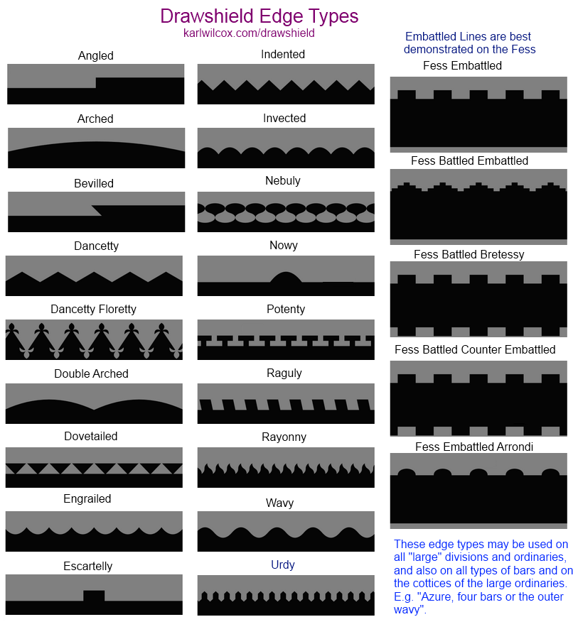

Instead of using straight edges to construct ordinaries or divisions, drawshield supports lines with various patterns along them, for example a bend indented or draws a bend with small steps along each edge. The following edge types can be drawn, most of which are shown in the accompanying diagrams.
Angled, dovetailed, escartelly, indented, invected, nowy, potenty, raguly, embattled, embattled-arrondi, battled-embattled, battled-brettesse, battled-counter-embattled, arched, double-arched bevilled, dancetty, dancetty-floretty, nebuly, engrailed, rayonny, wavy, urdy, twigged
{% include findedge.html skipadd = true %}Ordinaries may also be cotticed, (surrounded with narrow bars), and those cottices may also have an edge type, which may be different from that of its "parent" ordinary.
Similarly, if you draw a number of bars, palets or bendlets, these may also have their edge types specified. Indeed, you can use phrases such as four bars gules, the outer ones wavy to specify exactly which bars should have which edge type.
The word potenty can indicate either an edge type or a treatment of two colours. DrawShield tries to choose between these bylooking at the number of colours, thus a chief potenty or is a yellow chief with a edge made of "potent" shapes, while a chief potenty azure and or is a chief with a straight edge but coloured in with a pattern of blue and yellow potent shapes.